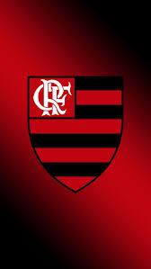

na época da fundação do Flamengo o remo reinava absoluto como esporte favorito dos cariocas, em pouco tempo outra modalidade começou a rivalizar pela preferência do público: o futebol. E o Flamengo estava predestinado a ter papel de protagonista nesta nova paixão nacional.
1911, houve um desentendimento interno no Fluminense. Alguns jogadores falavam trocar de clube, enquanto outros até mesmo pensavam em abandonar o futebol. Foi quando Alberto Borgerth, um dos jogadores do Fluminense, fez a proposta de criar uma seção de futebol no Flamengo, onde já era remador. A ideia foi aprovada e, no dia 8 de novembro daquele ano, foi criado o Departamento de Esportes Terrestres rubro-negro
Em fins do século XIX, o remo dominava o Rio de Janeiro. O futebol começava a aparecer em alguns clubes, mas ainda era olhado com certo temor, pois não estava sendo recebido com entusiasmo pela sociedade carioca. Entretanto, como era o remo quem mandava, as competições movimentavam as manhãs no Rio e não havia praia que não tivesse o seu grupo de regatas.
A turma da praia do Flamengo não acompanhava o resto dos rapazes, preferindo os passeios de barco pela baía e o bate-papo no Café Lamas, o já famoso restaurante do Largo do Machado.[1]
Um novo barco foi comprado e recebeu o nome de "Scyra". Na noite de 17 de novembro de 1895, muita gente estava em um dos corredores da casa número 22 da Praia do Flamengo, onde Nestor de Barros morava num dos quartos. Lá, há muito tempo, já haviam abrigado "Pherusa", e agora guardavam "Scyra". A reunião teve por objetivo a fundação do Grupo de Regatas do Flamengo. Naquela mesma noite foi eleita a primeira diretoria:
Domingos Marques de Azevedo; presidente Francisco Lucci Colas; vice-presidente Nestor de Barros; secretário Felisberto Cardoso Laport; tesoureiro
Uma curiosidade na história do Clube de Regatas do Flamengo é que seus atletas já haviam se arriscado a praticar o futebol. No dia 25 de outubro de 1903, antes da fundação do departamento de futebol do Flamengo, os remadores flamenguistas se reuniram com os colegas de esporte do Botafogo para a disputa de um amistoso.[7]
O Flamengo foi fundado em 17 de novembro de 1895 para as disputas de remo. A entrada da equipe no futebol aconteceu em 1912. Atualmente, o time rubro-negro é o maior vencedor da história do Campeonato Carioca, com 31 títulos. Segundo diversas pesquisas, é o clube com o maior número de torcedores do País.
